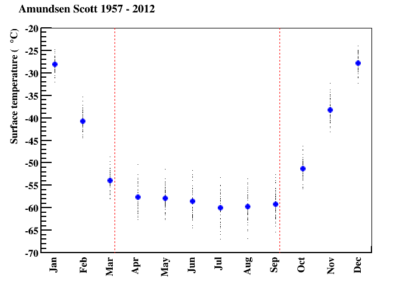

Antarctica
I used British Antarctic Survey data to plot the temperature at the south pole (the Amundsen Scott Research Base) from 1957 to 2012:
- black dots: the average monthly temperature in each year
- blue dots: the average monthly temperature over all years
- red lines: when the sun sets and rises
